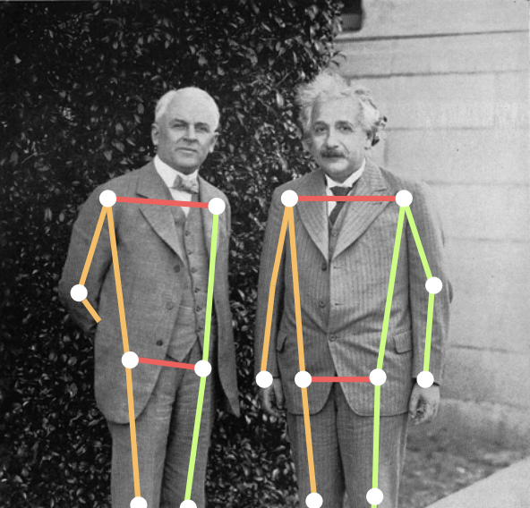

(Published at NeurIPS for Creativity Workshop, 2024)
Recent advances across the field of machine learning have created a world in which the
existent, publicly available models, training tools, and compute enable unprecedented
access to model building and deployment. This development creates a number of
well-documented novel dangers, it also presents an opportunity for relatively
under-resourced artistic cooperatives and even individual artists, to create interactive
and performance art outside of the scope we conventionally see in the “AI Art” community
today. Inspired by this development, this work argues for the artistic merit of expanding
the scope of what we think of AI Art far past what we have so far seen exhibited in venues
such as NeurIPS and in museums. We propose a movement toward art that is more directly
provocative, that centers humans rather than the “AI”, and that engages with model
training rather than simply inference. As a proof of concept, we describe a fictional
interactive exhibit, the Penametron, which invites the users to interact with, and
contribute to the training of, a model that estimates the length of a (fully clothed)
visitor’s penis.